綜合大獎
General
6 個獎項年度唱片
Record Of The Year
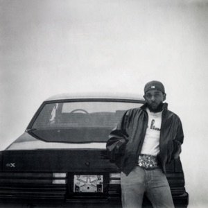
Luther
Kendrick Lamar & SZA
製作名單
Jack Antonoff, Scott Bridgeway, M-Tech, Roselilah, Sounwave & Kamasi Washington, producers; Jack Antonoff, Ray Charles Brown Jr., Hector Castro, Oli Jacobs, Jack Manning, Sean Matsukawa, Dani Perez, Tony Austin, Laura Sisk & Johnathan Turner, engineers/mixers; Ruairi O'Flaherty, mastering engineer
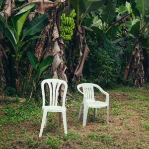
DTMF
Bad Bunny
製作名單
Scotty Dittrich, Julia Lewis, Hydra Hitz, La Paciencia, Mag & Tyler Spry, producers; Antonio Caraballo, Josh Gudwin, Roberto Rosado & Tyler Spry, engineers/mixers; Colin Leonard, mastering engineer
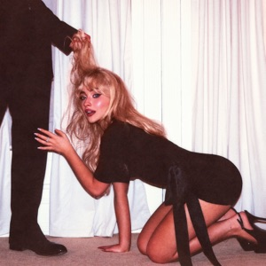
Manchild
Sabrina Carpenter
製作名單
Jack Antonoff & Sabrina Carpenter, producers; Jack Antonoff, Bryce Bordone, Jozef Caldwell, Serban Ghenea, Sean Hutchinson, Oli Jacobs, Michael Riddleberger & Laura Sisk, engineers/mixers; Ruairi O'Flaherty, mastering engineer
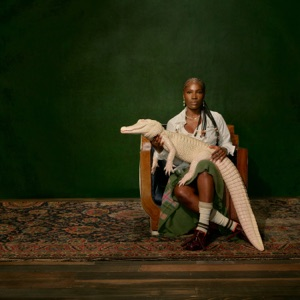
Anxiety
Doechii
製作名單
Doechii, producer; Jayda Love, engineer/mixer; Nicolas De Porcel, mastering engineer
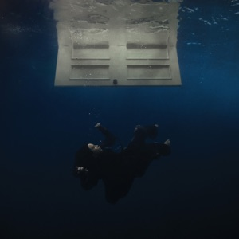
Wildflower
Billie Eilish
製作名單
Finneas, producer; Jon Castelli, Aron Forbes & Finneas, engineers/mixers; Dale Becker, mastering engineer
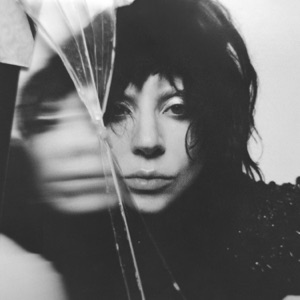
Abracadabra
Lady Gaga
製作名單
Cirkut, Lady Gaga & Andrew Watt, producers; Bryce Bordone, Serban Ghenea & Paul LaMalfa, engineers/mixers; Randy Merrill, mastering engineer
The Subway
Chappell Roan
製作名單
Daniel Nigro, producer; Chris Kasych, Mitch McCarthy & Daniel Nigro, engineers/mixers; Randy Merrill, mastering engineer
APT.
Rosé & Bruno Mars
製作名單
Rogét Chahayed, Cirkut, Omer Fedi & Bruno Mars, producers; Bryce Bordone, Serban Ghenea, Charles Moniz & Julian Vasquez, engineers/mixers; Chris Gehringer, mastering engineer
年度專輯
Album Of The Year
Debí Tirar Más Fotos
Bad Bunny
製作名單
Big Jay, La Paciencia, Mag & Tainy, producers; Antonio Caraballo, Josh Gudwin, Luis Amed Irizarry & Roberto José Rosado Torres, engineers/mixers; Benito Antonio Martínez Ocasio, Roberto José Rosado Torres, Marco Daniel Borrero, Jay Anthony Nuñez & Marco Efrain Masis, songwriters; Colin Leonard, mastering engineer
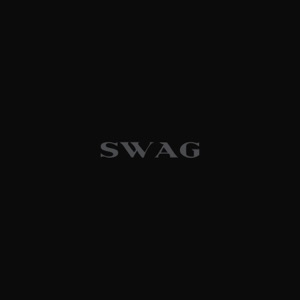
Swag
Justin Bieber
製作名單
Eddie Benjamin, Justin Bieber, Daniel Chetrit, Dijon, Carter Lang & Dylan Wiggins, producers; Felix Byrne & Josh Gudwin, engineers/mixers; Eddie Benjamin, Justin Bieber, Daniel Chetrit, Dijon Duenas, Tobias Jesso Jr., Carter Lang, Jackson Lee Morgan & Dylan Wiggins, songwriters; Dale Becker, mastering engineer
Man's Best Friend
Sabrina Carpenter
製作名單
Jack Antonoff, Sabrina Carpenter & John Ryan, producers; Zem Audu, Jack Antonoff, Bryce Bordone, Jozef Caldwell, Serban Ghenea, Jeff Gunnell, David Hart, Mikey Freedom Hart, Sean Hutchinson, Oli Jacobs, Jack Manning, Joey Miller, Michael Riddleberger, John Ryan, Laura Sisk & Evan Smith, engineers/mixers; Amy Allen, Jack Antonoff, Sabrina Carpenter & John Ryan, songwriters; Nathan Dantzler & Ruairi O'Flaherty, mastering engineers
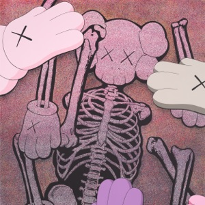
Let God Sort Em Out
Clipse
製作名單
Pharrell Williams, producer; Mike Larson, Manny Marroquin, Rob Ulsh & Pharrell Williams, engineers/mixers; Gene Elliott Thornton Jr., Terrence Thornton & Pharrell Williams, songwriters; Zach Pereyra, mastering engineer
Mayhem
Lady Gaga
製作名單
Cirkut, Lady Gaga, Gesaffelstein & Andrew Watt, producers; Bryce Bordone, Serban Ghenea & Paul LaMalfa, engineers/mixers; Henry Walter, Lady Gaga, Mike Lévy, Michael Polansky & Andrew Watt, songwriters; Randy Merrill, mastering engineer
GNX
Kendrick Lamar
製作名單
Jack Antonoff & Sounwave, producers; Jack Antonoff, Ray Charles Brown Jr., Jozef Caldwell, Oli Jacobs, Jack Manning, Dani Perez, Laura Sisk & Johnathan Turner, engineers/mixers; Jack Antonoff, Ink, Scott Bridgeway, Sam Dew, Kendrick Lamar, Matthew Bernard & Mark Anthony Spears, songwriters; Ruairi O'Flaherty, mastering engineer
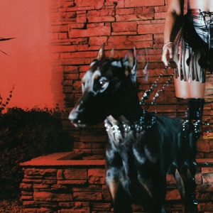
Mutt
Leon Thomas
製作名單
Freaky Rob, Peter Lee Johnson, D. Phelps & Leon Thomas, producers; Jean-Marie Horvat, engineer/mixer; Lazaro Andres Camejo, Freaky Rob, Peter Lee Johnson, D. Phelps & Leon Thomas, songwriters; Dave Kutch, mastering engineer
Chromakopia
Tyler, the Creator
製作名單
Tyler, the Creator, producer; Neal H Pogue, Tyler Okonma & Vic Wainstein, engineers/mixers; Tyler Okonma, songwriter; Mike Bozzi, mastering engineer
年度歌曲
Song Of The Year
Wildflower
製作名單
Billie Eilish O'Connell & Finneas O'Connell, songwriters (Billie Eilish)
Abracadabra
製作名單
Henry Walter, Lady Gaga & Andrew Watt, songwriters (Lady Gaga)
Anxiety
製作名單
Jaylah Hickmon, songwriter (Doechii)
APT.
製作名單
Amy Allen, Christopher Brody Brown, Rogét Chahayed, Henry Walter, Omer Fedi, Philip Lawrence, Bruno Mars, Chae Young Park & Theron Thomas, songwriters (Rosé & Bruno Mars)
DTMF
製作名單
Benito Antonio Martínez Ocasio, Scott Dittrich, Benjamin Falik, Roberto José Rosado Torres, Marco Daniel Borrero, Hugo René Sención Sanabria & Tyler Spry, songwriters (Bad Bunny)
Golden (from KPop Demon Hunters)
製作名單
Park Hong Jun, Joong Gyu Kwak, Yu Han Lee, Hee Dong Nam, Jeong Hoon Seo, Ejae & Mark Sonnenblick, songwriters (Huntrix: Ejae, Audrey Nuna & Rei Ami)
Luther
製作名單
Jack Antonoff, Roshwita Larisha Bacha, Matthew Bernard, Ink, Scott Bridgeway, Sam Dew, Kendrick Lamar, Mark Anthony Spears, Solána Rowe & Kamasi Washington, songwriters (Kendrick Lamar and SZA)
Manchild
製作名單
Amy Allen, Jack Antonoff & Sabrina Carpenter, songwriters (Sabrina Carpenter)
最佳新人
Best New Artist
Olivia Dean
入圍：Olivia Dean
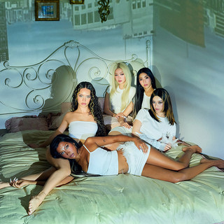
Katseye
入圍：Katseye
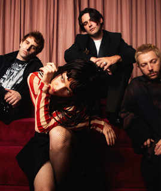
The Marías
入圍：The Marías
Addison Rae
入圍：Addison Rae
Sombr
入圍：Sombr
Leon Thomas
入圍：Leon Thomas
Alex Warren
入圍：Alex Warren
Lola Young
入圍：Lola Young
年度製作人（非古典）
Producer Of The Year, Non-Classical
Cirkut
入圍：Cirkut
製作名單
"Abracadabra" (Lady Gaga) (S)
"AEOMG" (Coco Jones) (T)
"APT." (Rosé and Bruno Mars) (S)
"Big Sleep" (The Weeknd featuring Giorgio Moroder) (T)
"Disease" (Lady Gaga) (S)
"It Girl" (Jade) (S)
"A Little More" (Ed Sheeran) (S)
Mayhem (Lady Gaga) (A)
"Red Terror" (The Weeknd) (T)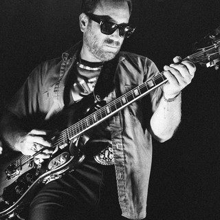
Dan Auerbach
入圍：Dan Auerbach
製作名單
"Elegantly Wasted" (Hermanos Gutiérrez featuring Leon Bridges) (S)
Harsh & Exciting (Moonrisers) (A)
"Holy Ghost Party" (Robert Finley) (S)
"Love Is Cruel" (Miles Kane) (S)
Medium Raw (Early James) (A)
A Million Knives (The Velveteers) (A)
No Rain, No Flowers (The Black Keys) (A)
Our Time in the Sun (Jeremie Albino) (A)Dijon
入圍：Dijon
製作名單
Baby (Dijon) (A)
"Daisies" (Justin Bieber) (T)
"Devotion" (Justin Bieber & Dijon) (T)
"Things You Do" (Justin Bieber) (T)
"Yukon" (Justin Bieber) (T)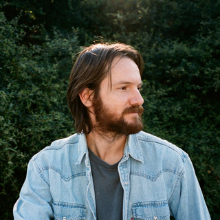
Blake Mills
入圍：Blake Mills
製作名單
For Melancholy Brunettes (& Sad Women) (Japanese Breakfast) (A)
Forever Is a Feeling (Lucy Dacus) (A)
Glory (Perfume Genius) (A)
That Wasn't a Dream (Pino Palladino and Blake Mills) (A)Sounwave
入圍：Sounwave
製作名單
GNX (Kendrick Lamar) (A)
年度詞曲創作者（非古典）
Songwriter Of The Year, Non-Classical
Amy Allen
入圍：Amy Allen
製作名單
"APT." (Rosé and Bruno Mars) (S)
"Bad as the Rest" (Jessie Murph) (S)
"Hail Mary" (Shaboozey and Sierra Ferrell) (T)
"Handlebars" (Jennie featuring Dua Lipa) (S)
"Just Keep Watching" (Tate McRae) (S)
"Lost In Translation" (Carín León & Kacey Musgraves) (S)
"Manchild" (Sabrina Carpenter) (S)
"Tears" (Sabrina Carpenter) (S)
"Why" (Jon Bellion featuring Luke Combs) (S)Edgar Barrera
入圍：Edgar Barrera
製作名單
"Birthday Behavior" (Bia and Young Miko) (S)
"Coleccionando Heridas" (Karol G and Marco Antonio Solís) (T)
"Ese Vato No Te Queda" (Carín León and Gabito Ballesteros) (S)
"Me Jalo" (Fuerza Regida and Grupo Frontera) (T)
"Me Retiro" (Santana and Grupo Frontera) (S)
"Milagros" (Karol G) (S)
"Sigueme Besando Así" (Manuel Turizo) (T)
"Soltera" (Shakira) (S)
"Una Noche Contigo" (Juanes) (S)Jessie Jo Dillon
入圍：Jessie Jo Dillon
製作名單
"Bless Your Heart" (Megan Moroney) (T)
"Bottomland" (Hardy) (S)
"Dreams Don't Die" (Jelly Roll) (S)
"First Rodeo" (Kelsea Ballerini) (T)
"Happen to Me" (Russell Dickerson) (S)
"Hello S***ty Day" (Jake Worthington and Miranda Lambert) (S)
"If You Were Mine" (Morgan Wallen) (T)
"Patterns" (Kelsea Ballerini) (T)
"To the Men That Love Women After Heartbreak" (Kelsea Ballerini) (T)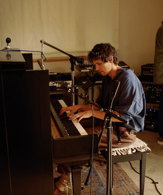
Tobias Jesso Jr.
入圍：Tobias Jesso Jr.
製作名單
"Another Baby!" (Dijon) (T)
"Baby!" (Dijon) (T)
"Daisies" (Justin Bieber) (T)
"From" (Bon Iver) (T)
"Go Baby" (Justin Bieber) (T)
"Golden Burning Sun" (Miley Cyrus) (T)
"Man I Need" (Olivia Dean) (S)
"Relationships" (Haim) (S)
"Walking Away" (Justin Bieber) (T)Laura Veltz
入圍：Laura Veltz
製作名單
"About You" (BigXthaPlug featuring Tucker Wetmore) (T)
"Blue Strips" (Jessie Murph) (S)
"Grand Bouquet" (Maren Morris) (T)
"Leave Me Too" (Josh Ross) (S)
"Parallel Universe" (Lauren Spencer Smith) (T)
"Someone In This Room" (Jessie Murph featuring Bailey Zimmerman) (T)
"Touch Me Like a Gangster" (Jessie Murph) (S)
"What Tomorrow's For" (Blessing Offor) (T)
"You'll Be OK, Kid" (from the Original Documentary Child Star) (Demi Lovato) (S)
流行與舞曲／電子
Pop & Dance/Electronic
7 個獎項最佳流行歌手演出
Best Pop Solo Performance
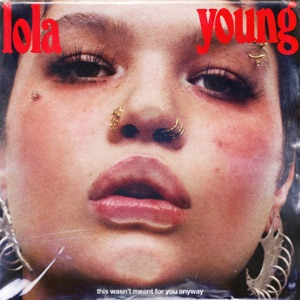
Messy
Lola Young
Daisies
Justin Bieber
Manchild
Sabrina Carpenter
Disease
Lady Gaga
The Subway
Chappell Roan
最佳流行組合／團體演出
Best Pop Duo/Group Performance
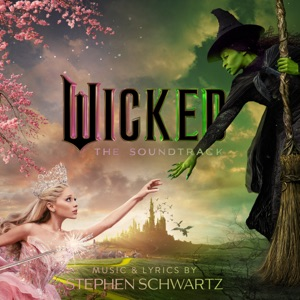
Defying Gravity
Cynthia Erivo & Ariana Grande
Golden (from KPop Demon Hunters)
Huntrix: Ejae, Audrey Nuna & Rei Ami
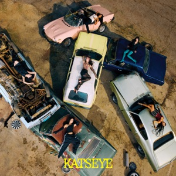
Gabriela
Katseye
APT.
Rosé & Bruno Mars
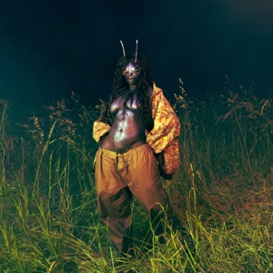
30 for 30
SZA featuring Kendrick Lamar
最佳流行演唱專輯
Best Pop Vocal Album
Mayhem
Lady Gaga
Swag
Justin Bieber
Man's Best Friend
Sabrina Carpenter
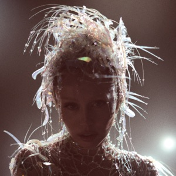
Something Beautiful
Miley Cyrus
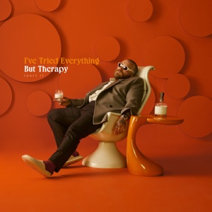
I've Tried Everything but Therapy (Part 2)
Teddy Swims
最佳舞曲／電子專輯
Best Dance/Electronic Album
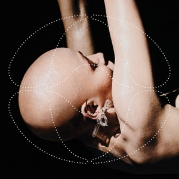
Eusexua
FKA Twigs
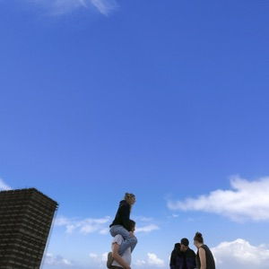
Ten Days
Fred Again..
Fancy That
PinkPantheress
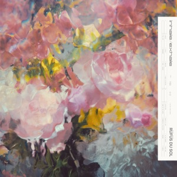
Inhale / Exhale
Rüfüs Du Sol
Fuck U Skrillex You Think Ur Andy Warhol but Ur Not!! <3
Skrillex
最佳流行舞曲錄音
Best Dance Pop Recording
Abracadabra
Lady Gaga
製作名單
Cirkut, Lady Gaga & Andrew Watt, producers; Serban Ghenea, mixer
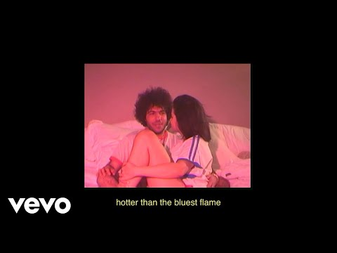
Bluest Flame
Selena Gomez and Benny Blanco
製作名單
Benny Blanco, Dylan Brady & Cashmere Cat, producers; Benny Blanco & Cashmere Cat, mixers
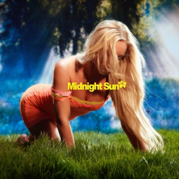
Midnight Sun
Zara Larsson
製作名單
Margo XS & MNEK, producers; Tom Norris, mixer
Just Keep Watching (from F1 the Movie)
Tate McRae
製作名單
Tyler Spry & Ryan Tedder, producers; Manny Marroquin, mixer
Illegal
PinkPantheress
製作名單
Aksel Arvid & PinkPantheress, producers; Nickie Jon Pabón, mixer
最佳舞曲／電子錄音
Best Dance/Electronic Recording
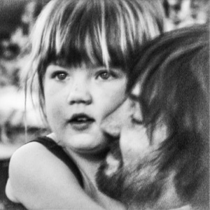
End of Summer
Tame Impala
製作名單
Kevin Parker, producer; Kevin Parker, mixer
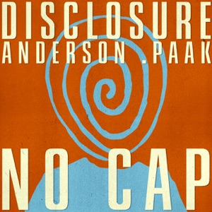
No Cap
Disclosure & Anderson .Paak
製作名單
Disclosure, producer; Guy Lawrence, mixer
Victory Lap
Fred Again, Skepta, & PlaqueBoyMax
製作名單
Blake Cascoe, Berwyn Du Bois, Fred Again, Darcy Lewis, Dan Mayo & PlaqueBoyMax, producers; Tom Norris, mixer
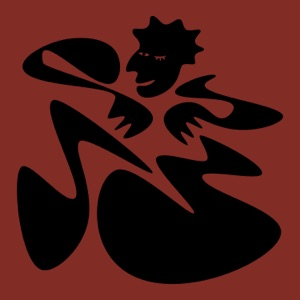
Space Invader
Kaytranada
製作名單
Kaytranada, producer; Kaytranada, mixer
Voltage
Skrillex
製作名單
John Feldmann & Skrillex, producers; Drew Gold, Robert Guzman, Luca Pretolesi, Skrillex & Virtual Riot, mixer
最佳混音錄音（非古典）
Best Remixed Recording, Non-Classical
Abracadabra (Gesaffelstein Remix)
Lady Gaga and Gesaffelstein
製作名單
Gesaffelstein, remixer
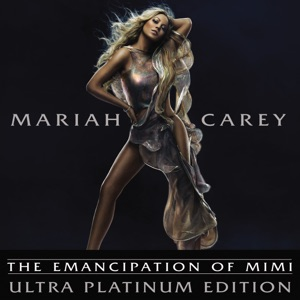
Don't Forget About Us (KAYTRANADA Remix)
Mariah Carey & Kaytranada
製作名單
Kaytranada, remixer
A Dreams a Dream (Ron Trent Remix)
Soul II Soul
製作名單
Ron Trent, remixer
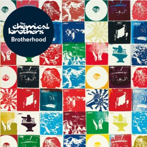
Galvanize (Chris Lake Remix)
The Chemical Brothers & Chris Lake
製作名單
Chris Lake, remixer
Golden (David Guetta Remix)
Huntrix: Ejae, Audrey Nuna and Rei Ami
製作名單
David Guetta, remixer
搖滾、金屬與另類
Rock, Metal & Alternative Music
6 個獎項最佳搖滾演出
Best Rock Performance
Changes (Live From Villa Park) Back to the Beginning
Yungblud featuring Nuno Bettencourt, Frank Bello, Adam Wakeman and II of Sleep Token
U Should Not Be Doing That
Amyl and the Sniffers
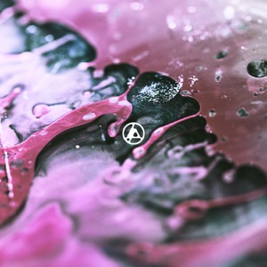
The Emptiness Machine
Linkin Park
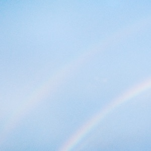
Never Enough
Turnstile
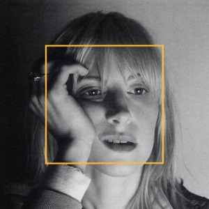
Mirtazapine
Hayley Williams
最佳金屬演出
Best Metal Performance
Birds
Turnstile
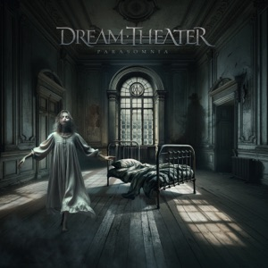
Night Terror
Dream Theater
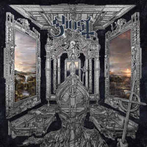
Lachryma
Ghost
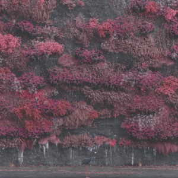
Emergence
Sleep Token
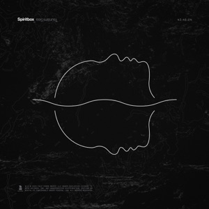
Soft Spine
Spiritbox
最佳搖滾歌曲
Best Rock Song
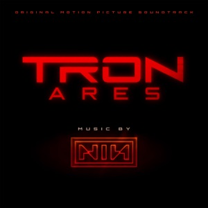
As Alive as You Need Me to Be
Nine Inch Nails
製作名單
Trent Reznor & Atticus Ross, songwriters
Caramel
Sleep Token
製作名單
Vessel & II, songwriters
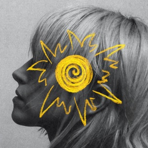
Glum
Hayley Williams
製作名單
Daniel James & Hayley Williams, songwriters
Never Enough
Turnstile
製作名單
Daniel Fang, Franz Lyons, Pat McCrory, Meg Mills & Brendan Yates, songwriters
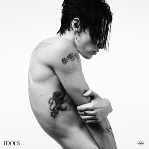
Zombie
Yungblud
製作名單
Dominic Harrison & Matt Schwartz, songwriters
最佳搖滾專輯
Best Rock Album
Never Enough
Turnstile
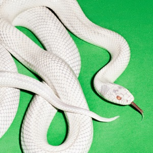
Private Music
Deftones
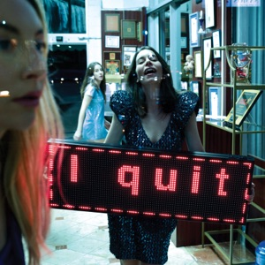
I Quit
Haim
From Zero
Linkin Park
Idols
Yungblud
最佳另類音樂演出
Best Alternative Music Performance
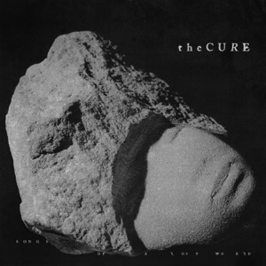
Alone
The Cure
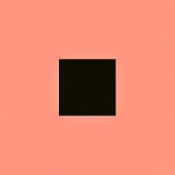
Everything Is Peaceful Love
Bon Iver
Seein' Stars
Turnstile
Mangetout
Wet Leg
Parachute
Hayley Williams
最佳另類音樂專輯
Best Alternative Music Album
Songs of a Lost World
The Cure
Sable, Fable
Bon Iver
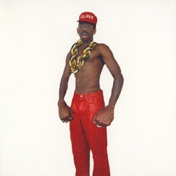
Don't Tap the Glass
Tyler, the Creator
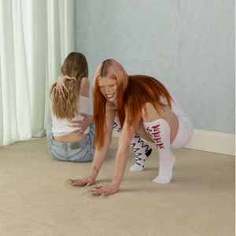
Moisturizer
Wet Leg
Ego Death at a Bachelorette Party
Hayley Williams
節奏藍調、饒舌與詩歌朗誦
R&B, Rap & Spoken Word Poetry
10 個獎項最佳節奏藍調演出
Best R&B Performance
Folded
Kehlani
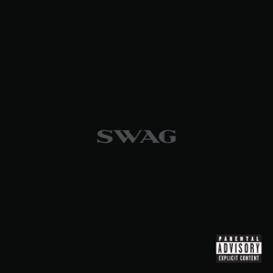
Yukon
Justin Bieber
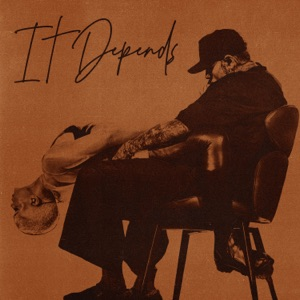
It Depends
Chris Brown featuring Bryson Tiller
Mutt (Live from NPR's Tiny Desk)
Leon Thomas
Heart of a Woman
Summer Walker
最佳傳統節奏藍調演出
Best Traditional R&B Performance
Vibes Don't Lie
Leon Thomas
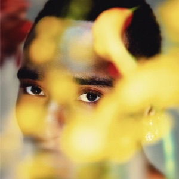
Here We Are
Durand Bernarr
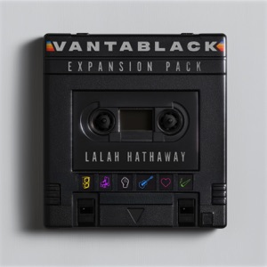
Uptown
Lalah Hathaway
Love You Too
Ledisi
Crybaby
SZA
最佳節奏藍調歌曲
Best R&B Song
Folded
Kehlani
製作名單
Kehlani Parrish, Andre Harris, Donovan Knight, Miloš Angelov, Khristopher Riddick-Tynes, Darius Scott & Dawit Wilson, songwriters
Heart of a Woman
Summer Walker
製作名單
Summer Walker & David Bishop, songwriters
It Depends
Chris Brown featuring Bryson Tiller
製作名單
Chris Brown, Bryson Tiller, Ephrem Lopez Jr., Kristopher Powers, Nicolas Baran, Usher Raymond IV, Jermaine Mauldin, Brian Casey, Manuel Seal, Dewain Whitmore Jr., Ant Clemons, Elliot Trent & Ryan Press, songwriters
Overqualified
Durand Bernarr
製作名單
James Abrahart Jr., Durand Bernarr, John Derisme, Egberto "Budda" Foster, Amaire Johnson, Frank Moka, Cary Singer & Chase Worrell, songwriters
Yes It Is
Leon Thomas
製作名單
Leon Thomas, Lazaro Andres Camejo, Mike Hector, Alexander Prawl, Rodney Jones Jr., Jariuce Banks, Peter Lee Johnson, songwriters
最佳前衛節奏藍調專輯
Best Progressive R&B Album
Bloom
Durand Bernarr
Adjust Brightness
Bilal
Love On Digital
Destin Conrad
Access All Areas
Flo
Come As You Are
Terrace Martin & Kenyon Dixon
最佳節奏藍調專輯
Best R&B Album
Mutt
Leon Thomas
Beloved
Giveon
Why Not More?
Coco Jones
The Crown
Ledisi
Escape Room
Teyana Taylor
最佳饒舌演出
Best Rap Performance
Chains & Whips
Clipse, Pusha T & Malice featuring Kendrick Lamar & Pharrell Williams
Outside
Cardi B
Anxiety
Doechii
TV Off
Kendrick Lamar featuring Lefty Gunplay
Darling, I
Tyler, the Creator featuring Teezo Touchdown
最佳旋律饒舌演出
Best Melodic Rap Performance
Luther
Kendrick Lamar & SZA
Proud of Me
Fridayy featuring Meek Mill
Wholeheartedly
JID featuring Ty Dolla Sign & 6lack
WeMaj
Terrace Martin & Kenyon Dixon featuring Rapsody
Somebody Loves Me
PartyNextDoor & Drake
最佳饒舌歌曲
Best Rap Song
TV Off
Kendrick Lamar featuring Lefty Gunplay
製作名單
Jack Antonoff, Larry Jayy, Kendrick Lamar, Dijon McFarlane, Sean Momberger, Mark Anthony Spears & Kamasi Washington, songwriters
Anxiety
Doechii
製作名單
Jaylah Hickmon, songwriter
The Birds Don't Sing
Clipse, Pusha T & Malice featuring John Legend & Voices of Fire
製作名單
Gene Elliott Thornton Jr., Terrence Thornton, Pharrell Williams & Stevie Wonder, songwriters
Sticky
Tyler, the Creator featuring GloRilla, Sexyy Red & Lil Wayne
製作名單
Aaron Bolton, Dwayne Carter Jr., Dudley Alexander Duverne, Tyler Okonma, Janae Wherry, Gloria Woods & Rex Zamor, songwriters
TGIF
GloRilla
製作名單
Lucas Alegria, Dillon Brophy, Yakki Davis, Jess Jackson, Ronnie Jackson, Mario Mims, Jorge M. Taveras & Gloria Woods, songwriters
最佳饒舌專輯
Best Rap Album
GNX
Kendrick Lamar
Let God Sort Em Out
Clipse
Glorious
GloRilla
God Does Like Ugly
JID
Chromakopia
Tyler, the Creator
最佳詩歌朗誦專輯
Best Spoken Word Poetry Album
Words for Days Vol. 1
Mad Skillz
A Hurricane in Heels: healed people don't act like that (partially recorded live @City Winery & other places)
Queen Sheba
Black Shaman
Marc Marcel
Pages
Omari Hardwick & Anthony Hamilton
Saul Williams Meets Carlos Niño & Friends at Treepeople
Saul Williams, Carlos Niño & Friends
爵士、傳統流行、當代演奏與音樂劇
Jazz, Traditional Pop, Contemporary Instrumental & Musical Theater
9 個獎項最佳爵士演出
Best Jazz Performance
Windows
Live" – Chick Corea, Christian McBride & Brian Blade
Noble Rise
Lakecia Benjamin featuring Immanuel Wilkins & Mark Whitfield
Peace of Mind / Dreams Come True
Samara Joy
Four
Michael Mayo
All Stars Lead to You (Live)
Nicole Zuraitis
最佳爵士演唱專輯
Best Jazz Vocal Album
Portrait
Samara Joy
Elemental
Dee Dee Bridgewater & Bill Charlap
We Insist 2025!
Terri Lyne Carrington & Christie Dashiell
Fly
Michael Mayo
Live at Vic's Las Vegas
Nicole Zuraitis, Dan Pugach, Tom Scott, Idan Morim, Keyon Harrold, Rachel Eckroth & Sam Weber
最佳爵士演奏專輯
Best Jazz Instrumental Album
Southern Nights
Sullivan Fortner featuring Peter Washington & Marcus Gilmore
Trilogy 3
Live – Chick Corea, Christian McBride & Brian Blade
Belonging
Branford Marsalis Quartet
Spirit Fall
John Patitucci featuring Chris Potter & Brian Blade
Fasten Up
Yellowjackets
最佳大型爵士樂團專輯
Best Large Jazz Ensemble Album
Without Further Ado, Vol 1
Christian McBride Big Band
Orchestrator Emulator
The 8-Bit Big Band
Lumen
Danilo Pérez & Bohuslän Big Band
Basie Rocks
Deborah Silver & The Count Basie Orchestra
Lights on a Satellite
Sun Ra Arkestra
Some Days Are Better: The Lost Scores
Kenny Wheeler Legacy featuring the Royal Academy of Music Jazz Orchestra & Frost Jazz Orchestra
最佳拉丁爵士專輯
Best Latin Jazz Album
A Tribute to Benny Moré and Nat King Cole
Gonzalo Rubalcaba, Yainer Horta & Joey Calveiro
La Fleur de Cayenne
Paquito D'Rivera & Madrid-New York Connection Band
The Original Influencers: Dizzy, Chano & Chico
Arturo O'Farrill & The Afro Latin Jazz Orchestra featuring Pedrito Martinez, Daymé Arocena, Jon Faddis, Donald Harrison & Melvis Santa
Mundoagua – Celebrating Carla Bley
Arturo O'Farrill & The Afro Latin Jazz Orchestra
Vanguardia Subterránea: Live at the Village Vanguard
Miguel Zenón Quartet
最佳另類爵士專輯
Best Alternative Jazz Album
Live-Action
Nate Smith
Honey from a Winter Stone
Ambrose Akinmusire
Keys to the City Volume One
Robert Glasper
Ride into the Sun
Brad Mehldau
Blues Blood
Immanuel Wilkins
最佳傳統流行演唱專輯
Best Traditional Pop Vocal Album
A Matter of Time
Laufey
Wintersongs
Laila Biali
The Gift of Love
Jennifer Hudson
Who Believes in Angels?
Elton John & Brandi Carlile
Harlequin
Lady Gaga
The Secret of Life: Partners, Volume 2
Barbra Streisand
最佳當代演奏專輯
Best Contemporary Instrumental Album
Brightside
Arkai
Ones & Twos
Gerald Clayton
BeaTrio
Béla Fleck, Edmar Castañeda, Antonio Sánchez
Just Us
Bob James & Dave Koz
Shayan
Charu Suri
最佳音樂劇專輯
Best Musical Theater Album
Buena Vista Social Club
Original Broadway Cast
製作名單
Marco Paguia, Dean Sharenow & David Yazbek, producers
Death Becomes Her
Original Broadway Cast
製作名單
Taurean Everett, Megan Hilty, Josh Lamon, Christopher Sieber, Jennifer Simard & Michelle Williams, principal vocalists; Noel Carey, Sean Patrick Flahaven, Julia Mattison, Mary-Mitchell Campbell & Scott M. Riesett, producers; Noel Carey & Julia Mattison, composers/lyricists
Gypsy
2024 Broadway Cast
製作名單
Danny Burstein, Kevin Csolak, Audra McDonald, Jordan Tyson & Joy Woods, principal vocalists; David Caddick, Andy Einhorn, David Lai & George C. Wolfe, producers (Jule Styne, composer; Stephen Sondheim, lyricist)
Just in Time
Original Broadway Cast
製作名單
Emily Bergl, Jonathan Groff, Erika Henningsen, Gracie Lawrence & Michele Pawk, principal vocalists; Tom Kirdahy, Derik Lee, Andrew Resnick, Bill Sherman & Alex Timbers, producers (Bobby Darin, composer & lyricist)
Maybe Happy Ending
Original Broadway Cast
製作名單
Marcus Choi, Darren Criss, Dez Duron & Helen J. Shen, principal vocalists; Deborah Abramson, Will Aronson, Ian Kagey & Hue Park, producers; Hue Park, lyricist; Will Aronson, composer & lyricist
鄉村與美國根源音樂
Country & American Roots Music
14 個獎項最佳鄉村個人演出
Best Country Solo Performance
Bad as I Used to Be (from F1 the Movie)
Chris Stapleton
Nose on the Grindstone
Tyler Childers
Good News
Shaboozey
I Never Lie
Zach Top
Somewhere Over Laredo
Lainey Wilson
最佳鄉村組合／團體演出
Best Country Duo/Group Performance
Amen
Shaboozey and Jelly Roll
A Song to Sing
Miranda Lambert and Chris Stapleton
Trailblazer
Reba McEntire, Miranda Lambert and Lainey Wilson
Love Me Like You Used to Do
Margo Price and Tyler Childers
Honky Tonk Hall of Fame
George Strait and Chris Stapleton
最佳當代鄉村專輯
Best Contemporary Country Album
Beautifully Broken
Jelly Roll
Patterns
Kelsea Ballerini
Snipe Hunter
Tyler Childers
Evangeline vs. the Machine
Eric Church
Postcards from Texas
Miranda Lambert
最佳傳統鄉村專輯
Best Traditional Country Album
Ain't in It for My Health
Zach Top
Dollar a Day
Charley Crockett
American Romance
Lukas Nelson
Oh What a Beautiful World
Willie Nelson
Hard Headed Woman
Margo Price
最佳鄉村歌曲
Best Country Song
Bitin' List
Tyler Childers
製作名單
Tyler Childers, songwriter
Good News
Shaboozey
製作名單
Sean Cook, Collins Obinna Chibueze, Sam Elliot Roman, Michael Ross Pollack, Nevin Sastry & Jacob Torrey, songwriters
I Never Lie
Zach Top
製作名單
Carson Chamberlain, Tim Nichols & Zach Top, songwriters
Somewhere Over Laredo
Lainey Wilson
製作名單
Andy Albert, Trannie Anderson, Dallas Wilson & Lainey Wilson, songwriters
A Song to Sing
Miranda Lambert and Chris Stapleton
製作名單
Jenee Fleenor, Jesse Frasure, Miranda Lambert & Chris Stapleton, songwriters
最佳美國根源歌曲
Best American Roots Song
Ancient Light
I'm with Her
製作名單
Sarah Jarosz, Aoife O'Donovan & Sara Watkins, songwriters
Big Money
Jon Batiste
製作名單
Jon Batiste, Mike Elizondo & Steve McEwan, songwriters
Foxes in the Snow
Jason Isbell
製作名單
Jason Isbell, songwriter
Middle
Jesse Welles
製作名單
Jesse Welles, songwriter
Spitfire
Sierra Hull
製作名單
Sierra Hull, songwriter
最佳美國根源演出
Best American Roots Performance
Beautiful Strangers
Mavis Staples
Lonely Avenue
Jon Batiste featuring Randy Newman
Ancient Light
I'm with Her
Crimson and Clay
Jason Isbell
Richmond on the James
Alison Krauss & Union Station
最佳美式民謠演出
Best Americana Performance
Godspeed
Mavis Staples
Boom
Sierra Hull
Poison in My Well
Maggie Rose & Grace Potter
That's Gonna Leave a Mark
Molly Tuttle
Horses
Jesse Welles
最佳美式民謠專輯
Best Americana Album
Big Money
Jon Batiste
Bloom
Larkin Poe
Last Leaf on the Tree
Willie Nelson
So Long Little Miss Sunshine
Molly Tuttle
Middle
Jesse Welles
最佳藍草專輯
Best Bluegrass Album
Highway Prayers
Billy Strings
Carter & Cleveland
Michael Cleveland & Jason Carter
A Tip Toe High Wire
Sierra Hull
Arcadia
Alison Krauss & Union Station
Outrun
The SteelDrivers
最佳傳統藍調專輯
Best Traditional Blues Album
Ain't Done with the Blues
Buddy Guy
Room on the Porch
Taj Mahal & Keb' Mo'
One Hour Mama: The Blues of Victoria Spivey
Maria Muldaur
Look Out Highway
Charlie Musselwhite
Young Fashioned Ways
Kenny Wayne Shepherd & Bobby Rush
最佳當代藍調專輯
Best Contemporary Blues Album
Preacher Kids
Robert Randolph
Breakthrough
Joe Bonamassa
Paper Doll
Samantha Fish
A Tribute to LJK
Eric Gales
Family
Southern Avenue
最佳民謠專輯
Best Folk Album
Wild and Clear and Blue
I'm With Her
What Did the Blackbird Say to the Crow
Rhiannon Giddens & Justin Robinson
Crown of Roses
Patty Griffin
Foxes in the Snow
Jason Isbell

Under the Powerlines: April 24 – September 24
Jesse Welles
最佳地方根源音樂專輯
Best Regional Roots Music Album
A Tribute to the King of Zydeco
Various Artists
Live at Vaughan's
Corey Henry & The Treme Funktet
For Fat Man
Preservation Brass & Preservation Hall Jazz Band
Church of New Orleans
Kyle Roussel
Second Line Sunday
Trombone Shorty and New Breed Brass Band
福音與當代基督教音樂
Gospel & Contemporary Christian Music
5 個獎項最佳福音演出／歌曲
Best Gospel Performance/Song
Come Jesus Come
CeCe Winans featuring Shirley Caesar
Do It Again
Kirk Franklin
製作名單
Kirk Franklin, songwriter
Church
Tasha Cobbs Leonard and John Legend
製作名單
Anthony S. Brown, Brunes Charles, Annatoria Chitapa, Kenneth Leonard Jr., Tasha Cobbs Leonard & Jonas Myrin, songwriters

Still Live
Jonathan McReynolds & Jamal Roberts
製作名單
Britney Delagraentiss, Jonathan McReynolds, David Lamar Outing II, Orlando Joel Palmer & Terrell Demetrius Wilson, songwriters
Amen
Pastor Mike Jr.
製作名單
Adia Andrews, Michael McClure Jr., David Lamar Outing II & Terrell Anthony Pettus, songwriters
最佳當代基督教音樂演出／歌曲
Best Contemporary Christian Music Performance/Song
Hard Fought Hallelujah
Brandon Lake with Jelly Roll
製作名單
Chris Brown, Jason Bradley Deford, Steven Furtick, Benjamin William Hastings & Brandon Lake, songwriters
I Know a Name
Elevation Worship, Chris Brown, Brandon Lake
製作名單
Hank Bentley, Steven Furtick, Brandon Lake & Jacob Sooter, songwriters
Your Way's Better
Forrest Frank
製作名單
Forrest Frank & Pera, songwriters

Headphones
Lecrae, Killer Mike and T.I.
製作名單
BongoByTheWay, Clifford Harris, Lecrae Moore, Michael Render & Tyshane Thompson, songwriters
Amazing
Darrel Walls and PJ Morton
製作名單
PJ Morton & Darrel Walls, songwriters
最佳福音專輯
Best Gospel Album
Heart of Mine
Darrel Walls and PJ Morton
Sunny Days
Yolanda Adams
Tasha
Tasha Cobbs Leonard
Live Breathe Fight
Tamela Mann
Only On the Road Live
Tye Tribbett
最佳當代基督教音樂專輯
Best Contemporary Christian Music Album
Coritos Vol. 1
Israel & New Breed
Child of God II
Forrest Frank

King of Hearts
Brandon Lake
Reconstruction
Lecrae
Let the Church Sing
Tauren Wells
最佳根源福音專輯
Best Roots Gospel Album
I Will Not Be Moved (Live)
The Brooklyn Tabernacle Choir
Then Came the Morning
Gaither Vocal Band
Praise & Worship: More Than a Hollow Hallelujah
The Isaacs
Good Answers
Karen Peck and New River
Back to My Roots
Candi Staton
拉丁、世界、非洲、雷鬼與新世紀
Latin, Global, African, Reggae & New Age, Ambient, Or Chant
10 個獎項最佳拉丁流行專輯
Best Latin Pop Album
Cancionera
Natalia Lafourcade

Cosa Nuestra
Rauw Alejandro
Bogotá (Deluxe)
Andrés Cepeda
Tropicoqueta
Karol G
¿Y Ahora Qué?
Alejandro Sanz
最佳拉丁都會專輯
Best Música Urbana Album
Debí Tirar Más Fotos
Bad Bunny
Mixteip
J Balvin
Ferxxo Vol X: Sagrado
Feid
Naiki
Nicki Nicole
EUB Deluxe
Trueno
Sinfónico
En Vivo – Yandel
最佳拉丁搖滾或另類專輯
Best Latin Rock Or Alternative Album
Papota
Ca7riel & Paco Amoroso
Genes Rebeldes
Aterciopelados
Astropical
Bomba Estéreo and Rawayana (Astropical)
Algorhythm
Los Wizzards
Novela
Fito Paez
最佳墨西哥音樂專輯（含 Tejano）
Best Música Mexicana Album (Including Tejano)
Palabra de To's (Seca)
Carín León
Mala Mía
Fuerza Regida and Grupo Frontera
Y Lo Que Viene
Grupo Frontera
Sin Rodeos
Paola Jara
Bobby Pulido & Friends una Tuya y una Mía - Por la Puerta Grande (En Vivo)
Bobby Pulido
最佳熱帶拉丁專輯
Best Tropical Latin Album
Raíces
Gloria Estefan
Fotografías
Rubén Blades and Roberto Delgado & Orquesta
Clásicos 1.0
Grupo Niche
Bingo
Alain Pérez
Debut y Segunda Tanda, Vol. 2
Gilberto Santa Rosa
最佳雷鬼專輯
Best Reggae Album
Blxxd & Fyah
Keznamdi
Treasure Self Love
Lila Iké
Heart & Soul
Vybz Kartel
From Within
Mortimer
No Place Like Home
Jesse Royal
最佳世界音樂演出
Best Global Music Performance
Eoo
Bad Bunny
Cantando en el Camino
Ciro Hurtado
Jerusalema
Angélique Kidjo
Inmigrante y Que?
Yeisy Rojas
Shrini's Dream (Live)
Shakti
Daybreak
Anoushka Shankar featuring Alam Khan & Sarathy Korwar
最佳世界音樂專輯
Best Global Music Album
Caetano e Bethânia Ao Vivo
Caetano Veloso and Maria Bethânia
Sounds of Kumbha
Siddhant Bhatia
No Sign of Weakness
Burna Boy
Eclairer le monde - Light the World
Youssou N'Dour
Mind Explosion (50th Anniversary Tour Live)
Shakti
Chapter III: We Return to Light
Anoushka Shankar featuring Alam Khan & Sarathy Korwar
最佳非洲音樂演出
Best African Music Performance
Push 2 Start
Tyla
Love
Burna Boy
With You
Davido featuring Omah Lay
Hope & Love
Eddy Kenzo & Mehran Matin
Gimme Dat
Ayra Starr featuring Wizkid
最佳新世紀、氛圍或頌歌專輯
Best New Age, Ambient, Or Chant Album
Nomadica
Carla Patullo featuring The Scorchio Quartet & Tonality
Kuruvinda
Kirsten Agresta-Copely
According to the Moon
Cheryl B. Engelhardt, GEM, Dallas String Quartet
Into the Forest
Jahnavi Harrison
The Colors in My Mind
Chris Redding
兒童、喜劇、有聲書、影視與音樂影像
Children’s, Comedy, Audio Book Narration and Storytelling, Visual Media & Music Video/Film
9 個獎項最佳兒童音樂專輯
Best Children's Music Album
Harmony
Fyütch & Aura V
Ageless: 100 Years Young
Joanie Leeds & Joya
Buddy's Magic Tree House
Mega Ran
Herstory
Flor Bromley
The Music of Tori and the Muses
Tori Amos
最佳喜劇專輯
Best Comedy Album
Your Friend, Nate Bargatze
Nate Bargatze
Drop Dead Years
Bill Burr
PostMortem
Sarah Silverman
Single Lady
Ali Wong
What Had Happened Was...
Jamie Foxx
最佳有聲書、旁白與說故事錄音
Best Audio Book, Narration & Storytelling Recording
Meditations: Reflections of His Holiness the Dalai Lama
Tenzin Gyatso, the Dalai Lama
Elvis, Rocky & Me: The Carol Connors Story
Kathy Garver
Into the Uncut Grass
Trevor Noah
Lovely One: A Memoir
Ketanji Brown Jackson
You Know It's True: The Real Story of Milli Vanilli
Fab Morvan
最佳影視合輯原聲帶
Best Compilation Soundtrack For Visual Media
Sinners
Various Artists; Ryan Coogler, Ludwig Göransson & Serena Göransson, compilation producers; Nikki Sherod, music supervisor
A Complete Unknown
Timothée Chalamet, artist; Nick Baxter, Steven Gizicki & James Mangold, compilation producers; Steven Gizicki, music supervisor
F1 the Album
Various Artists; Brandon Davis, Joe Khoury & Kevin Weaver, compilation producers; David Taylor & Jake Voulgarides, music supervisors
KPop Demon Hunters
Various Artists; Spring Aspers & Dana Sano, compilation producers; Ian Eisendrath, music supervisor
Wicked
Cynthia Erivo, Ariana Grande & Wicked Movie Cast, artists; Stephen Oremus, Stephen Schwartz, & Greg Wells, compilation producers; Maggie Rodford, music supervisor
最佳影視配樂原聲帶
Best Score Soundtrack Album for Visual Media
Sinners
Ludwig Göransson
How to Train Your Dragon
John Powell
Severance: Season 2
Theodore Shapiro
Wicked
John Powell & Stephen Schwartz
The Wild Robot
Kris Bowers
最佳電玩與互動媒體配樂原聲帶
Best Score Soundtrack For Video Games and Other Interactive Media
Sword of the Sea
Austin Wintory
Avatar: Frontiers of Pandora
Secrets of the Spires – Pinar Toprak
Helldivers 2
Wilbert Roget II
Indiana Jones and the Great Circle
Gordy Haab
Star Wars Outlaws: Wild Card & A Pirate's Fortune
Cody Matthew Johnson & Wilbert Roget II
最佳影視歌曲
Best Song Written For Visual Media
Golden (from KPop Demon Hunters)
製作名單
Ejae, Teddy Park, Joong Gyu Kwak, Yu Han Lee, Hee Dong Nam, Jeong Hoon Seo & Mark Sonnenblick, songwriters (Huntrix: Ejae, Audrey Nuna, Rei Ami)
As Alive as You Need Me to Be (from Tron: Ares)
製作名單
Trent Reznor & Atticus Ross, songwriters (Nine Inch Nails)
I Lied to You (from Sinners)
製作名單
Ludwig Göransson & Raphael Saadiq, songwriters (Miles Caton)
Never Too Late (from Elton John: Never Too Late)
製作名單
Brandi Carlile, Elton John, Bernie Taupin & Andrew Watt, songwriters (Elton John & Brandi Carlile)
Pale, Pale Moon (from Sinners)
製作名單
Ludwig Göransson & Brittany Howard, songwriters (Jayme Lawson)
Sinners (from Sinners)
製作名單
Leonard Denisenko, Rodarius Green, Travis Harrington, Tarkan Kozluklu, Kyris Mingo & Darius Povilinus, songwriters (Rod Wave)
最佳音樂錄影帶
Best Music Video
Anxiety
Doechii
製作名單
James Mackel, video director; Pablo Feldman, Jolene Mendes & Sophia Sabella, video producers
Manchild
Sabrina Carpenter
製作名單
Vania Heymann & Gal Muggia, video directors; Aiden Magarian, Nathan Scherrer & Natan Schottenfels, video producers
So Be It
Clipse
製作名單
Hannan Hussain, video director; Theresa Kusumadjaja, video producer
Love
OK Go
製作名單
Aaron Duffy, Miguel Espada & Damian Kulash Jr., video directors; Petra Ahmann & Andrew Geller, video producer
Young Lion
Sade
製作名單
Sophie Muller, video director; Aaron Taylor Dean & Sade, video producers
最佳音樂影片
Best Music Film
Music by John Williams
John Williams
製作名單
Laurent Bouzereau, video director; Sara Bernstein, Laurent Bouzereau, Justin Falvey, Darryl Frank, Brian Grazer, Ron Howard, Meredith Kaulfers, Kathleen Kennedy, Frank Marshall, Steven Spielberg & Justin Wilkes, video producers
Devo
Devo
製作名單
Chris Smith, video director; Danny Gabai, Anita Greenspan, Chris Holmes & Chris Smith, video producers
Live at the Royal Albert Hall
Raye
製作名單
Paul Dugdale, video director; Stefan Demetriou & Amy James, video producers
Relentless
Diane Warren
製作名單
Bess Kargman, video director; Peggy Drexler, Michele Farinola & Kat Nguyen, video producers
Piece by Piece
Pharrell Williams
製作名單
Morgan Neville, video director; Morgan Neville, Caitrin Rogers, Mimi Valdes & Pharrell Williams, video producers
包裝、專輯介紹與歷史專輯
Package, Notes & Historical
4 個獎項最佳歷史專輯
Best Historical Album
Joni Mitchell Archives
Vol. 4: The Asylum Years (1976–1980)
製作名單
Patrick Milligan & Joni Mitchell, compilation producers; Bernie Grundman, mastering engineer (Joni Mitchell)
The Making of Five Leaves Left
製作名單
Joe Black, Cally Callomon & Johnny Chandler, compilation producers; Richard Whittaker, restoration engineer; Simon Heyworth & John Wood, mastering engineers (Nick Drake)
Roots Rocking Zimbabwe: The Modern Sound of Harare Townships 1975–1980 (Analog Africa No. 41)
製作名單
Samy Ben Redjeb, compilation producer; Michael Graves, mastering engineer (Various Artists)
Super Disco Pirata: De Tepito Para El Mundo 1965–1980 (Analog Africa No. 39)
製作名單
Samy Ben Redjeb, compilation producer; Michael Graves, mastering engineer (Various Artists)
You Can't Hip a Square: The Doc Pomus Songwriting Demos
製作名單
Will Bratton, Sharyn Felder & Cheryl Pawelski, compilation producers; Michael Graves, mastering engineer (Doc Pomus)
最佳唱片包裝
Best Recording Package
Tracks II: The Lost Albums
製作名單
Meghan Foley & Michelle Holme, art directors (Bruce Springsteen)
And the Adjacent Possible
製作名單
Hà Trịnh Quốc Bảo, Damian Kulash, Claudio Ripol, Wombi Rose & Yuri Suzuki, art directors (OK Go)
Balloonerism
製作名單
Bráulio Amado & Alim Smith, art directors (Mac Miller)
Danse Macabre: De Luxe
製作名單
Rory McCartney, art director (Duran Duran)
Loud Is As
製作名單
Farbod Karkobi & Emily Sneddon, art directors (Tsunami)
Sequoia
製作名單
Tim Breen & Ken Shipley, art directors (Various Artists)
The Spins (Picture Disc Vinyl)
製作名單
Darby Kaighin-Shields & Miller McCormick, art director (Mac Miller)
最佳專輯封面
Best Album Cover
Chromakopia
製作名單
Tyler Okonma, art director (Tyler, the Creator)
Debí Tirar Más Fotos
製作名單
Benito Antonio Martinez Ocasio, art director (Bad Bunny)
The Crux
製作名單
Jake Hirshland, Joe Keery, Neil Krug, Taylor Vandergift & William Wesley II, art directors (Djo)
Glory
製作名單
Cody Critcheloe, Mike Hadreas & Andrew J.S., art directors (Perfume Genius)
Moisturizer
製作名單
Iris Luz, Lava La Rue & Rhian Teasdale, art directors (Wet Leg)
最佳專輯介紹
Best Album Notes
Miles 55: The Prestige Recordings
製作名單
Ashley Kahn, notes writer (Miles Davis)
Adios, Farewell, Goodbye, Good Luck, So Long: On Stage 1964-1974
製作名單
Scott B. Bomar, notes writer (Buck Owens and His Buckaroos)
After the Last Sky
製作名單
Adam Shatz, notes writer (Anouar Brahem, Anja Lechner, Django Bates, Dave Holland)
Árabe
製作名單
Amanda Ekery, notes writer (Amanda Ekery)
The First Family: Live at Winchester Cathedral 1967
製作名單
Alec Palao, notes writer (Sly & the Family Stone)
A Ghost is Born (20th Anniversary Deluxe Edition)
製作名單
Bob Mehr, notes writer (Wilco)
製作、工程、作曲與編曲
Production, Engineering, Composition & Arrangement
7 個獎項年度製作人（古典）
Producer Of The Year, Classical
Elaine Martone
入圍：Elaine Martone
製作名單
Berlioz: Symphonie Fantastique (Franz Welser-Möst & The Cleveland Orchestra) (A)
Chopin & Rachmaninoff: Cello Sonatas (Brian Thornton & Spencer Myer) (A)
Dear Mrs. Kennedy (Ryan Townsend Strand) (A)
Eastman: Symphony No. 2; Tchaikovsky: Symphony No. 2 (Franz Welser-Möst & The Cleveland Orchestra) (A)
LeFrak: Romántico (Sharon Isbin, Enrico Lopez-Yañez & Orchestra of St. Luke's) (A)
Mozart: Piano Concerto No. 27 & Symphony No. 29 (Garrick Ohlsson, Franz Welser-Möst & The Cleveland Orchestra) (A)
The Poet & The Prodigy (Debra Nagy & Mark Edwards) (A)
Shapes in Collective Space (Tallā Rouge) (A)
Songs of Orpheus (Kelley O'Connor) (A)Blanton Alspaugh
入圍：Blanton Alspaugh
製作名單
All Is Miracle - The Choral Music of Kyle Pederson (Timothy J. Campbell & Transept) (A)
Heggie: Intelligence (Kwamé Ryan, Janai Brugger, Jamie Barton, J'Nai Bridges & Houston Grand Opera) (A)
Marsalis: Blues Symphony (Jader Bignamini & Detroit Symphony Orchestra) (A)
Massenet: Werther (Robert Spano, Matthew Polenzani, Isabel Leonard & Houston Grand Opera) (A)
The Mirage Calls (Charles Bruffy & Kansas City Chorale) (A)
Sheehan: Ukrainian War Requiem (Michael Zaugg, Axios, Men's Ensemble & Pro Coro Canada) (A)
Sun, Moon, Stars, Rain (Christopher Gabbitas & Phoenix Chorale) (A)Sergei Kvitko
入圍：Sergei Kvitko
製作名單
Biedenbender: Enigma; River of Time (Kevin L. Sedatole & Michigan State University Wind Symphony) (A)
Chiaroscuro (Vedrana Subotic) (A)
Dancing in a Still Life (Tasha Warren) (A)
Excursions (Vuorovesi Trio) (A)
Four Hands. Two Hearts. One Hope. Ukrainian and American Music for Piano Duo (Mykhailo Diordiiev & Anastasiia Larchikova) (A)
Here and Now - Trumpet Music by Virginia Composers (Jason Crafton, Richard Masters, Annie Stevens & Paul Langosch) (A)
Lansky: Touch and Go (Gwendolyn Dease) (A)
Orbiting Garden (William Hobbs) (A)
Would That Loving Were Enough (Haven Trio) (A)Morten Lindberg
入圍：Morten Lindberg
製作名單
Fred Over Jorden (Peace to the World) (Elisabeth Holte, Kjetil Bjerkestrand & Uranienborg Vokalensemble) (A)
Stjernebru (Anne Karin Sundal-Ask & Det Norske Jentekor) (A)
Yule (Trio Mediæval) (A)Dmitriy Lipay
入圍：Dmitriy Lipay
製作名單
Heggie: Before It All Goes Dark (Joseph Mechavich, Megan Marino, Ryan McKinny & Music of Remembrance Ensemble) (A)
Odyssey (Jorge Glem, Gustavo Dudamel & Simón Bolívar Symphony Orchestra of Venezuela) (A)
Ortiz: Yanga (Gustavo Dudamel, Alisa Weilerstein & Los Angeles Philharmonic) (A)
最佳沉浸式音訊專輯
Best Immersive Audio Album
Immersed
製作名單
Justin Gray, immersive mix engineer; Michael Romanowski, immersive mastering engineer; Justin Gray, Drew Jurecka & Morten Lindberg, immersive producers (Justin Gray)
All American Fuckboy
製作名單
Andrew Law, immersive mix engineer (Duckwrth)
An Immersive Tribute to Astor Piazzolla (Live)
製作名單
Andrés Mayo & Martín Muscatello, immersive mix engineers; Andrés Mayo & Martín Muscatello, immersive producers (Various Artists)
Tearjerkers
製作名單
Hans-Martin Buff, immersive mix engineer; Hans-Martin Buff, immersive producer (Tearjerkers)
Yule
製作名單
Morten Lindberg, immersive mix engineer; Morten Lindberg, immersive mastering engineer; Arve Henriksen & Morten Lindberg, immersive producers (Trio Mediæval)
最佳器樂作曲
Best Instrumental Composition
First Snow
製作名單
Remy Le Boeuf, composer (Nordkraft Big Band, Remy Le Boeuf & Danielle Wertz)
Live Life This Day: Movement I
製作名單
Miho Hazama, composer (Miho Hazama, Danish Radio Big Band & Danish National Symphony Orchestra)
Lord, That's a Long Way
製作名單
Sierra Hull, composer (Sierra Hull)
Opening
製作名單
Zain Effendi, composer (Zain Effendi)
Train to Emerald City
製作名單
John Powell & Stephen Schwartz, composers (John Powell & Stephen Schwartz)
Why You Here / Before the Sun Went Down
製作名單
Ludwig Göransson, composer (Ludwig Göransson featuring Miles Caton)
最佳錄音工程專輯（古典）
Best Engineered Album, Classical
Cerrone: Don't Look Down
製作名單
Mike Tierney, engineer; Alan Silverman, mastering engineer (Sandbox Percussion)
Eastman: Symphony No. 2; Tchaikovsky: Symphony No. 2
製作名單
Gintas Norvila, engineer; Jennifer Nulsen, mastering engineer (Franz Welser-Möst & The Cleveland Orchestra)
Shostakovich: Lady Macbeth Of The Mtsensk District
製作名單
Shawn Murphy & Nick Squire, engineers; Tim Martyn, mastering engineer (Andris Nelsons, Kristine Opolais, Günther Groissböck, Peter Hoare, Brenden Gunnell & Boston Symphony Orchestra)
Standard Stoppages
製作名單
Sean Connors, Robert Dillon, Peter Martin, Bill Maylone, Judith Sherman & David Skidmore, engineers; Joe Lambert, mastering engineer (Third Coast Percussion)
Yule
製作名單
Morten Lindberg, engineer; Morten Lindberg, mastering engineer (Trio Mediæval)
最佳錄音工程專輯（非古典）
Best Engineered Album, Non-Classical
That Wasn't a Dream
製作名單
Joseph Lorge & Blake Mills, engineers; Patricia Sullivan, mastering engineer (Pino Palladino & Blake Mills)
All Things Light
製作名單
Jesse Brock, Jon Castelli, Matt Chamberlain, Tyler Johnson, Nick Lobel, Simon Maartensson, Lawrence "Boo" Mitchell, Rob Moose, Anders Mouridsen, Ryan Nasci, Ernesto Olivera-Lapier, Ethan Schneiderman, Rahm Silverglade & Owen Stoutt, engineers; Dale Becker, mastering engineer (Cam)
Arcadia
製作名單
Neal Cappellino & Gary Paczosa, engineers; Brad Blackwood, mastering engineer (Alison Krauss & Union Station)
For Melancholy Brunettes (& Sad Women)
製作名單
Joseph Lorge, Blake Mills & Sebastian Reunert, engineers; Patricia Sullivan, mastering engineer (Japanese Breakfast)
最佳器樂或無伴奏合唱編曲
Best Arrangement, Instrumental Or A Cappella
Super Mario Praise Break
製作名單
Bryan Carter, Charlie Rosen & Matthew Whitaker, arrangers (The 8-Bit Big Band)
Be Okay
製作名單
Cynthia Erivo, arranger (Cynthia Erivo)
A Child Is Born
製作名單
Remy Le Boeuf, arranger (Nordkraft Big Band & Remy Le Boeuf)
Fight On
製作名單
Andy Clausen, Addison Maye-Saxon, Riley Mulherkar & Chloe Rowlands, arrangers (The Westerlies)
最佳器樂與人聲編曲
Best Arrangement, Instrumental and Vocals
Big Fish
製作名單
Erin Bentlage, Sara Gazarek, Johnaye Kendrick, Nate Smith & Amanda Taylor, arrangers (Nate Smith featuring säje)
How Did She Look?
製作名單
Nelson Riddle, arranger (Seth MacFarlane)
Keep an Eye on Summer
製作名單
Jacob Collier, arranger (Jacob Collier)
Something in the Water (Acoustic-Ish)
製作名單
Clyde Lawrence, Gracie Lawrence & Linus Lawrence, arrangers (Lawrence)
What a Wonderful World
製作名單
Cody Fry, arranger (Cody Fry)
古典
Classical
8 個獎項最佳管弦樂演出
Best Orchestral Performance
Messiaen: Turangalîla-Symphonie
製作名單
Andris Nelsons conductor (Boston Symphony Orchestra)
Coleridge-Taylor: Toussaint L'Ouverture, Ballade Op. 4, Suites from '24 Negro Melodies
製作名單
Michael Repper, conductor (National Philharmonic)
Ravel: Boléro, M. 81
製作名單
Gustavo Dudamel, conductor (Simón Bolívar Symphony Orchestra of Venezuela)
Still & Bonds
製作名單
Yannick Nézet-Séguin, conductor (The Philadelphia Orchestra)
Stravinsky: Symphony in Three Movements
製作名單
Esa-Pekka Salonen, conductor (San Francisco Symphony)
最佳歌劇錄音
Best Opera Recording
Heggie: Intelligence
製作名單
Kwamé Ryan, conductor; Jamie Barton, J'Nai Bridges & Janai Brugger; Blanton Alspaugh, producer (Houston Grand Opera; Gene Scheer)
Huang Ruo: An American Soldier
製作名單
Carolyn Kuan, conductor; Hannah Cho, Alex DeSocio, Nina Yoshida Nelsen & Brian Vu; Adam Abeshouse, Silas Brown & Doron Schachter, producers (American Composers Orchestra; David Henry Hwang)
Kouyoumdjian: Adoration
製作名單
Alan Pierson, conductor; Miriam Khalil, Marc Kudisch, David Adam Moore, Omar Najmi, Naomi Louisa O'Connell & Karim Sulayman; Mary Kouyoumdjian, producer (Silvana Quartet; The Choir of Trinity Wall Street)
O'Halloran: Trade & Mary Motorhead
製作名單
Elaine Kelly, conductor; Oisín Ó Dálaigh & John Molloy; Alex Dowling & Emma O'Halloran, producers (Irish National Opera Orchestra; Mark O'Halloran)
Tesori: Grounded
製作名單
Yannick Nézet-Séguin, conductor; Ben Bliss, Emily D'Angelo, Greer Grimsley & Kyle Miller; David Frost, producer (The Metropolitan Opera Orchestra; The Metropolitan Opera Chorus; George Brant)
最佳合唱演出
Best Choral Performance
Ortiz: Yanga
製作名單
Gustavo Dudamel, conductor; Grant Gershon, chorus master (Los Angeles Philharmonic; Los Angeles Master Chorale)
Advena
Liturgies for a Broken World
製作名單
Craig Hella Johnson, conductor (Simon Barrad, Emily Yocum Black & Michael Hawes; Conspirare)
Childs: In the Arms of the Beloved
製作名單
Grant Gershon, conductor (Billy Childs, Dan Chmielinski, Christian Euman, Larry Koonse, Lyris Quartet, Anne Akiko Meyers, Carol Robbins & Luciana Souza; Los Angeles Master Chorale)
Lang: Poor Hymnal
製作名單
Donald Nally, conductor (Steven Bradshaw, Michael Hawes, Lauren Kelly, Rebecca Siler & Elisa Sutherland; The Crossing)
Requiem of Light
製作名單
Steven Fox, conductor; Emily Drennan & Patti Drennan, chorus masters (Brian Giebler & Sangeeta Kaur; The Clarion Choir)
最佳室內樂／小型合奏演出
Best Chamber Music/Small Ensemble Performance
Dennehy: Land of Winter
Alan Pierson & Alarm Will Sound
La Mer – French Piano Trios
Neave Trio
Lullabies for the Brokenhearted
Lili Haydn & Paul Cantelon
Slavic Sessions
Mak Grgić and Mateusz Kowalski
Standard Stoppages
Third Coast Percussion
最佳古典器樂獨奏
Best Classical Instrumental Solo
Shostakovich: The Cello Concertos
Yo-Yo Ma; Andris Nelsons, conductor (Boston Symphony Orchestra)
Coleridge-Taylor: 3 Selections from '24 Negro Melodies
Curtis Stewart; Michael Repper, conductor (National Philharmonic)
Hope Orchestrated
Mary Dawood Catlin; Jesús David Medina & Raniero Palm, conductors (Venezuela Strings Recording Ensemble)
Inheritances
Adam Tendler
Price: Piano Concerto in One Movement in D Minor
Han Chen; John Jeter, conductor (Malmö Opera Orchestra)
Shostakovich: The Piano Concertos; Solo Works
Yuja Wang; Andris Nelsons, conductor (Boston Symphony Orchestra)
最佳古典獨唱
Best Classical Vocal Solo
Telemann: Ino
Opera Arias for Soprano
製作名單
Amanda Forsythe, soloist; Robert Mealy, Paul O'Dette & Stephen Stubbs, conductors (Boston Early Music Festival Orchestra)
Alike
My Mother's Dream
製作名單
Allison Charney, soloist; Benjamin Loeb, conductor (National Symphonia Orchestra)
Black Pierrot
Sidney Outlaw
製作名單
Sidney Outlaw, soloist; Warren Jones, pianist
In This Short Life
Devony Smith
製作名單
Devony Smith, soloist; Danny Zelibor, pianist; Michael Nicolas, artist
Kurtág: Kafka Fragments
Susan Narucki
製作名單
Susan Narucki, soloist; Curtis Macomber, artist
Schubert Beatles
Theo Hoffman
製作名單
Theo Hoffman, soloist; Steven Blier, pianist (Rupert Boyd, Julia Bullock, Alex Levine, Andrew Owens, Rubén Rengel & Sam Weber)
最佳古典合輯
Best Classical Compendium
Ortiz: Yanga
Gustavo Dudamel
製作名單
Gustavo Dudamel, conductor; Dmitriy Lipay, producer
Cerrone: Don't Look Down
Sandbox Percussion
製作名單
Sandbox Percussion; Jonathan Allen, Victor Caccese, Christopher Cerrone, Ian Rosenbaum, Terry Sweeney & Mike Tierney, producers
The Dunbar/Moore Sessions, Vol. II
Will Liverman
製作名單
Will Liverman; Jonathan Estabrooks, producer
Seven Seasons
Janai Brugger
製作名單
Janai Brugger, Isolde Fair, MB Gordy & Starr Parodi; Nicholas Dodd, conductor; Jeff Fair, Starr Parodi & Kitt Wakeley, producers
Tombeaux
Christina Sandsengen
製作名單
Christina Sandsengen; Shaun Drew & Christina Sandsengen, producers
最佳當代古典作曲
Best Contemporary Classical Composition
Ortiz: Dzonot
製作名單
Gabriela Ortiz, composer (Alisa Weilerstein, Gustavo Dudamel & Los Angeles Philharmonic)
Cerrone: Don't Look Down
製作名單
Christopher Cerrone, composer (Conor Hanick & Sandbox Percussion)
Dennehy: Land of Winter
製作名單
Donnacha Dennehy, composer (Alan Pierson & Alarm Will Sound)
León: Raíces
Origins
製作名單
Tania León, composer (Edward Gardner & London Philharmonic Orchestra)
Okpebholo: Songs in Flight
製作名單
Shawn E. Okpebholo, composer (Will Liverman, Paul Sánchez & Various Artists)
找不到符合的作品，換個關鍵字試試。